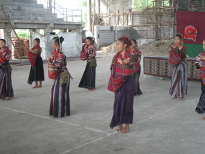

tibuli 
/tibuli/
n.
tribe
seini ne lalag iya sika se ngaran te sabeka ne grupu te te me etew ne due keugalingen kultura, tradisyun, wey me pegtuu. Kaayun degma ne egngaranan te sabeka ne tribu seini.
Ka Tibuli ne me etew due keugalingun ne kultura.
The Tibuli peoples have thier own culture.
Eng. tibuli
Tag. tibuli
Ceb. tibuli
Online dict status: -
Usage level: M
Created: 21/May/2009
Updated by: QDL
Last updated: 13/Oct/2009
This page last updated: 03-Jan-2020
Copyright © 2009-2014, Matigsalug Language Christian Association, Inc